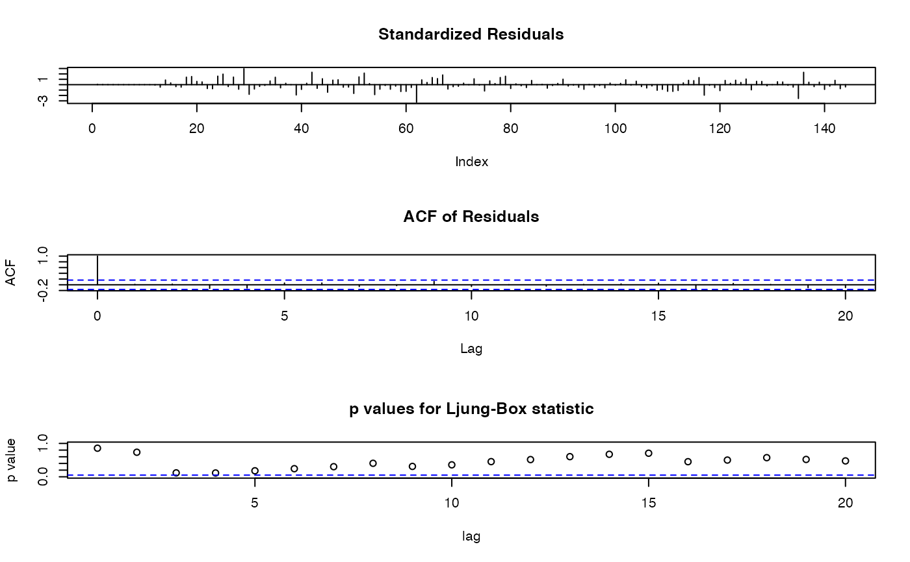
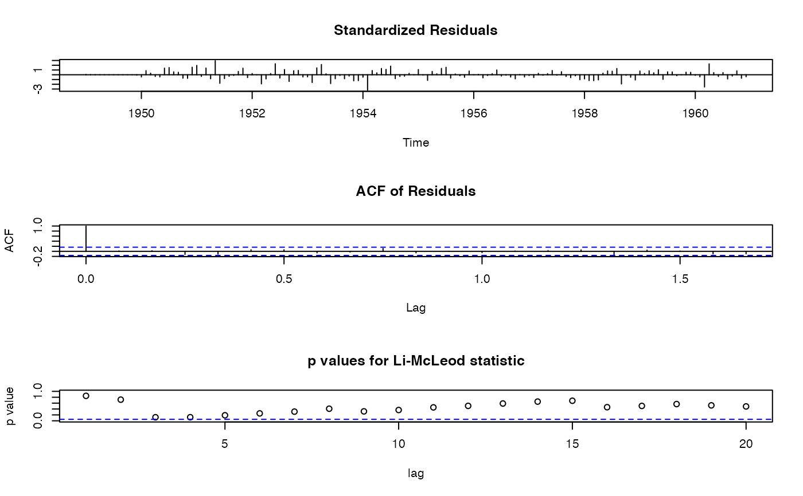
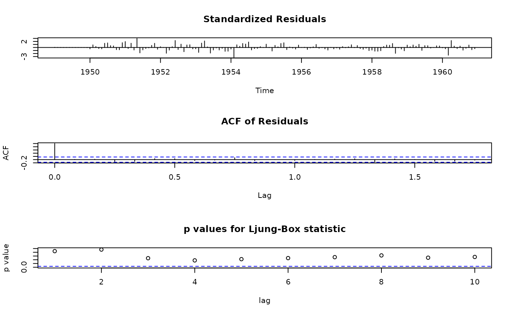

tsdiag.Sarima.RdProduce diagnostics for fitted seasonal ARIMA models. The method offers several portmanteau tests (including Ljung-Box, Li-McLeod and Box-Pierce), plots of autocorrelations and partial autocorrelations of the residuals, ability to control which graphs are produced (including interactively), as well as their layout.
# S3 method for Sarima tsdiag(object, gof.lag = NULL, ask = FALSE, ..., plot = 1:3, layout = NULL)
| object | fitted (seasonal) ARIMA model, currently the output of |
|---|---|
| gof.lag | maximal lag for portmanteau tests. |
| ask | if |
| ... | not used. |
| plot | if |
| layout | a list with arguments for |
Compute and graph diagnostics for seasonal ARIMA models. For objects
of class "Sarima" (produced by sarima) just call the
generic, tsdiag. The method can be called also directly on the output
from base R's arima() with tsdiag.Sarima() or
sarima::tsdiag.Sarima().
The method offers several portmanteau tests (including Ljung-Box, Li-McLeod and Box-Pierce), plots of autocorrelations and partial autocorrelations of the residuals, ability to control which graphs are produced (including interactively), as well as their layout.
plot can be TRUE to ask for all plots or a vector of
positive integers specifying which plots to consider. Currently the
following options are available:
| 1 | residuals |
| 2 | acf of residuals |
| 3 | p values for Ljung-Box statistic |
| 4 | p values for Li-McLeod statistic |
| 5 | p values for Box-Pierce statistic |
| 6 | pacf of residuals |
plot = 1:3.
If plot is TRUE, you probably need also ask = TRUE.
The method always makes a correction of the degrees of freedom of the
portmanteau tests. The default graph is similar to stats::tsdiag
(but with adjusted d.f.).
Argument layout can be used to change the layout of the plot,
for example to put two graphs per plot. Currently it should be a list
of arguments for layout. don't call
layout youself, as that will change the graphics device prematurely.
The computed results are returned (invisibly).
a list with components:
residuals
Ljung box test
LiMcLeod test
BoxPierce test
Georgi N. boshnakov
ap.baseA <- sarima(log(AirPassengers) ~ 0 | ma(1, c(-0.3)) + sma(12,1, c(-0.1)) + i(1) + si(12,1), ss.method = "base") tsdiag(ap.baseA)## apply the method on objects from arima() ap.arima <- arima(log(AirPassengers), order = c(0,1,1), seasonal = c(0,1,1)) tsdiag.Sarima(ap.arima)